Curso: Machine learning — aprendizaje supervisado de regresión en Python
28 de julio de 2026
Dejemos el computador listo antes de escribir la primera línea de código
El código del curso debe funcionar independientemente del editor que usen. Visual Studio Code es mi recomendación, no una obligación.
Entramos a https://www.python.org/
Descarguen siempre desde python.org. Los instaladores de Python que circulan en otros sitios son una vía habitual de malware.
Vamos a “Downloads” y escogemos el sistema operativo que tenemos.
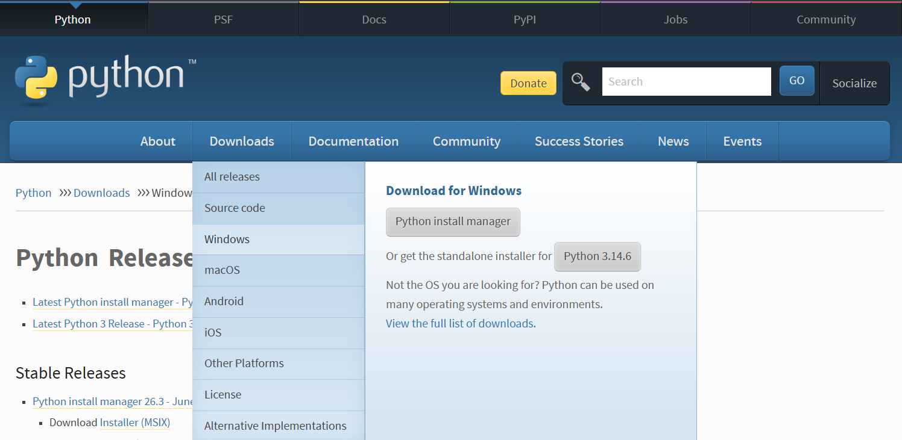
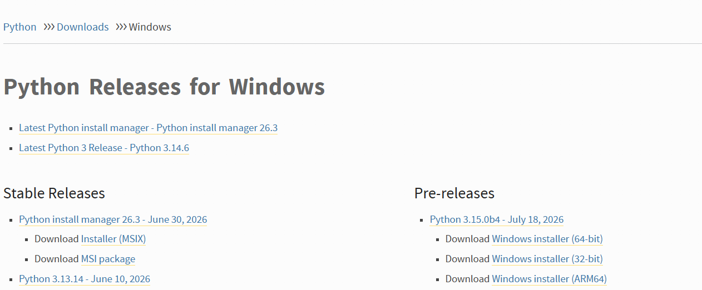
La lista de versiones de Python para Windows: las estables arriba y las preliminares a la derecha.
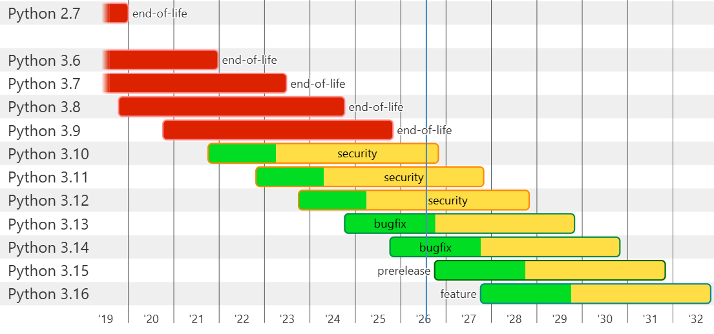
Ciclo de vida de cada versión de Python. Verde = corrección de errores, amarillo = solo parches de seguridad, rojo = sin soporte.
Mi recomendación es Python 3.12, porque está en etapa security: eso significa que aún tiene soporte y que ya pasó la etapa de corrección de errores.
Es decir, es una versión madura y estable. Las más nuevas todavía están puliendo fallos; las más viejas ya no reciben parches.
Una versión muy reciente suele traer problemas de compatibilidad con las librerías científicas, que tardan meses en adaptarse.
Si van a usar la recomendada, pueden ir directamente a https://www.python.org/downloads/release/python-31210/ o escanear este QR.
Bajamos hasta el final de la página de la versión elegida y damos clic al instalador que queremos. Para equipos comunes: “Windows installer (64-bit)”.
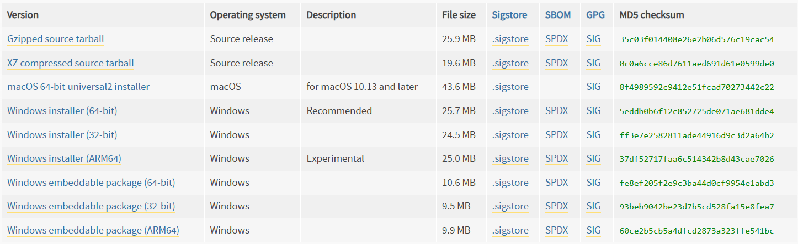
Ya que descargó, damos doble clic en el archivo.
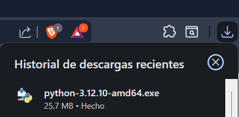
Marquen “Add python.exe to PATH” antes de instalar.
Sin esa casilla, Windows no sabrá dónde está Python y los comandos python y pip no funcionarán desde la terminal.
Después, clic en “Install now”.
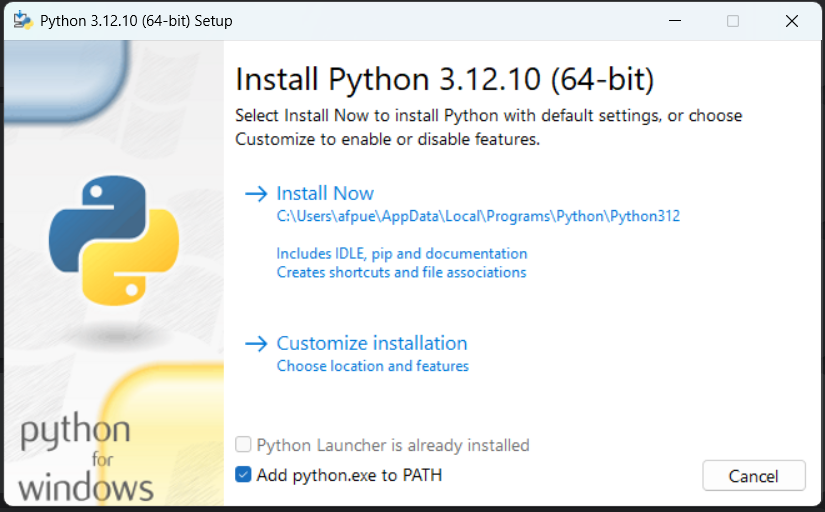
La instalación tarda un par de minutos. No cierren la ventana hasta que aparezca el mensaje de finalización.
Abrimos la terminal y ejecutamos:
C:\Users\afpue>python --version
Se debe ver así:
C:\Users\afpue>python --version Python 3.12.10
Si en vez de la versión aparece “python no se reconoce como un comando”, casi siempre es que faltó marcar Add python.exe to PATH en el paso 6.
Ya tenemos Python. Para instalar las librerías que necesitemos se usa el comando pip install, así:
C:\Users\afpue>pip install nombre_libreria
pip es el gestor de paquetes de Python y viene incluido con la instalación. No hay que instalarlo aparte.
Este es el comando con las librerías que posiblemente necesitemos:
C:\Users\afpue>pip install numpy pandas matplotlib seaborn scipy scikit-learn statsmodels jupyter
Datos numpy · pandas — arreglos numéricos y tablas.
Gráficos matplotlib · seaborn — visualización.
Modelos scipy · scikit-learn · statsmodels — estadística y machine learning.
Entorno jupyter — cuadernos interactivos.
Ya que tenemos Python, vamos a instalar un IDE que nos permita tener extensiones y complementos que faciliten la programación.
Personalmente recomiendo Visual Studio Code, pero el código programado debe funcionar independientemente del IDE utilizado.
Pueden acceder a él desde https://code.visualstudio.com/ o este QR.
Damos clic en “Download for Windows” si es el caso; si no, clic en “Other platforms”.
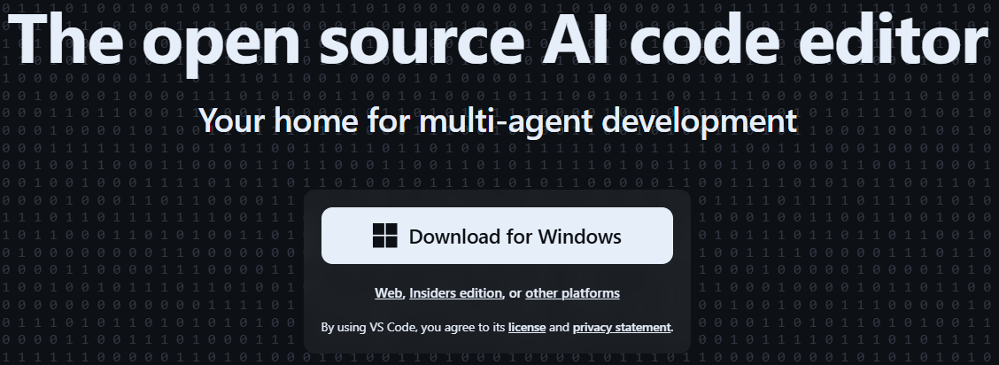
Le damos doble clic a la descarga.
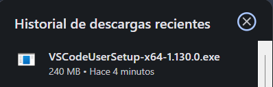
Aceptamos los acuerdos de licencia y clic en “Siguiente”.
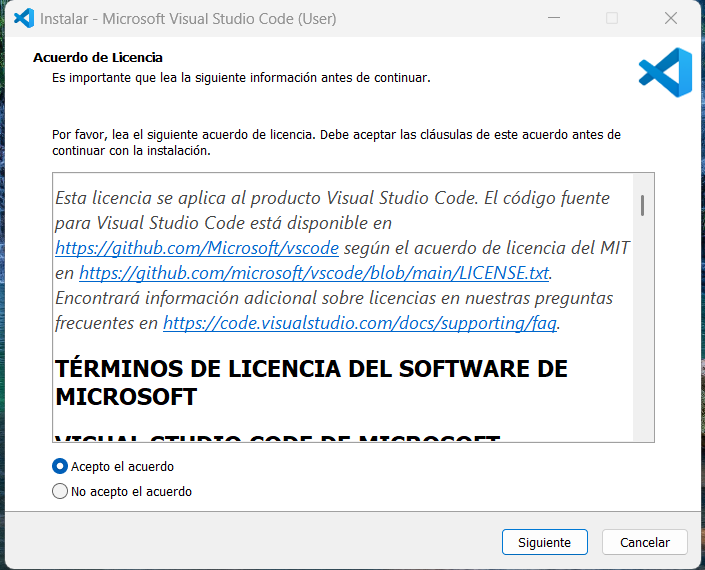
Agregamos a PATH y escogemos las demás opciones que deseen.
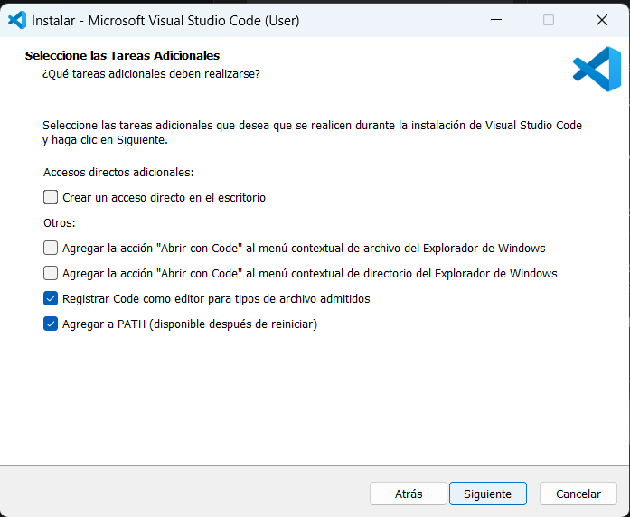
Ya solo le damos en instalar y esperamos.
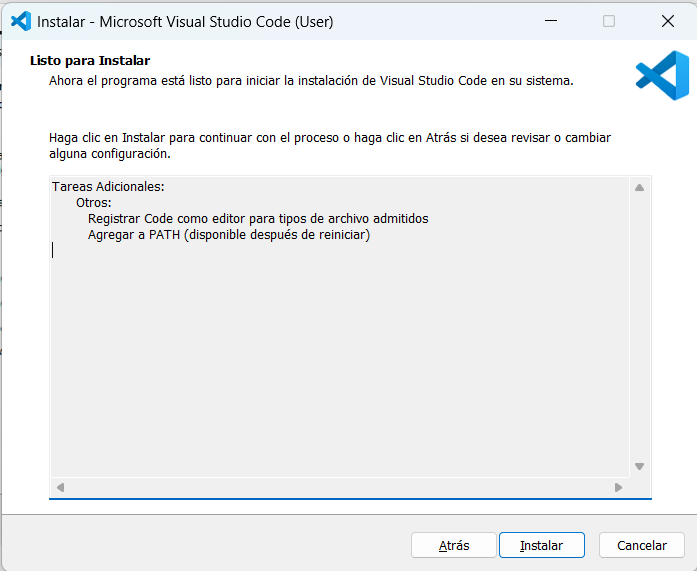
Ya solo lo abrimos y podemos empezar a crear archivos.
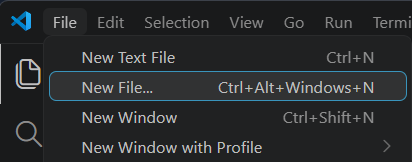
Abran la terminal y ejecuten los tres comandos. Si los tres responden, están listos:
C:\Users\afpue>python --version C:\Users\afpue>pip --version C:\Users\afpue>python -c "import numpy, pandas, sklearn; print('Todo listo')"
El último debe responder:
C:\Users\afpue>python -c "import numpy, pandas, sklearn; print('Todo listo')" Todo listo
“python no se reconoce como un comando” Faltó marcar Add python.exe to PATH. Se arregla reinstalando y marcando la casilla, o añadiendo Python al PATH a mano.
El comando funciona pero pip no Prueben con python -m pip install ... en lugar de pip install ....
Abrí la terminal antes de instalar Ciérrenla y ábranla de nuevo: el PATH solo se actualiza en ventanas nuevas.
Error al compilar una librería Suele pasar con versiones de Python muy recientes. Es el motivo de recomendar la 3.12.
Si a alguien no le funcionó, lo resolvemos ahora
Andrés F. PuertaInstalación de herramientasSesión 1